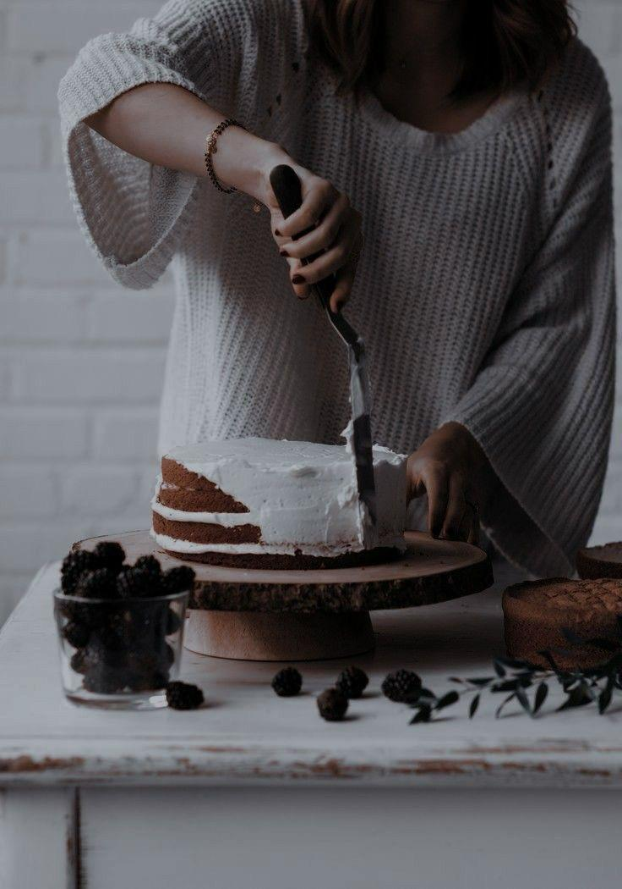

סדנאות המתקיימות ב-Sweet Symphony
אנו מזמינים אתכם להשתתף במגוון סדנאות קולינריות שנועדו להעשיר את הידע הקולינרי ולחשוף אתכם לטכניקות מקצועיות בהכנת קינוחים ייחודיים.


סדנת מאקרונים
הצטרפו לסדנת מאקרונים, בה תלמדו את רזי ההכנה של המאקרונים המושלמים - עם מגוון מילויים מרהיבים וצביעה טבעית.
סדנת שוקולד
בואו לגלות את אומנות השוקולד בסדנה מיוחדת שתלמד אתכם כיצד להכין פרלינים מעוצבים וטעימים. בסדנה תלמדו טכניקות להמסה, זיגוג וצביעה של שוקולד.
סדנת קישוט עוגות
למדו כיצד לקשט עוגות ברמה הגבוהה ביותר בעזרת כלים מיוחדים וטכניקות קישוט מתקדמות, כך שתוכלו להרשים את האורחים שלכם בכל אירוע.
מתכונים מיוחדים
לאלו שמעדיפים להתנסות בבית, הכנו עבורכם מתכונים פשוטים ומיוחדים שיאפשרו לכם להכין קינוחים מושלמים מהמטבח הביתי שלכם.
- מתכון למוס שוקולד עשיר
- מתכון לטארט פירות טריים
- מתכון למיני מאפינס בטעמים ייחודיים